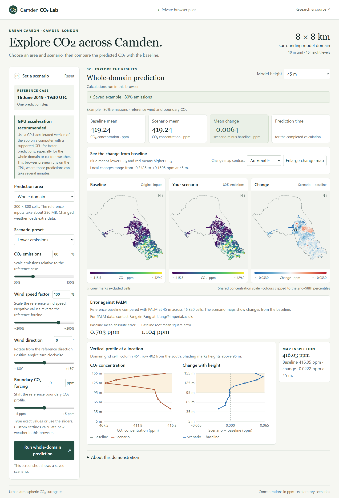

Camden CO₂ Lab
A browser-based research app for exploring how emissions, wind speed, wind direction, and boundary CO₂ affect predicted concentrations in Camden, London.
The app compares a scenario with its baseline on a 10 m grid. It can show a selected tile or the whole 8 × 8 km model domain, with maps and vertical profiles across 16 model heights.
Example prediction
This preview shows a completed scenario with emissions set to 80% of the reference case and reference weather. The maps compare concentrations at 45 m, and the profiles show how the concentrations and their difference vary with height at a selected location.

The interactive app is currently in private testing.
See the Camden CO₂ comparison with PALM and the surrogate model source code.
For PALM data, contact Fangxin Fang at f.fang@imperial.ac.uk.